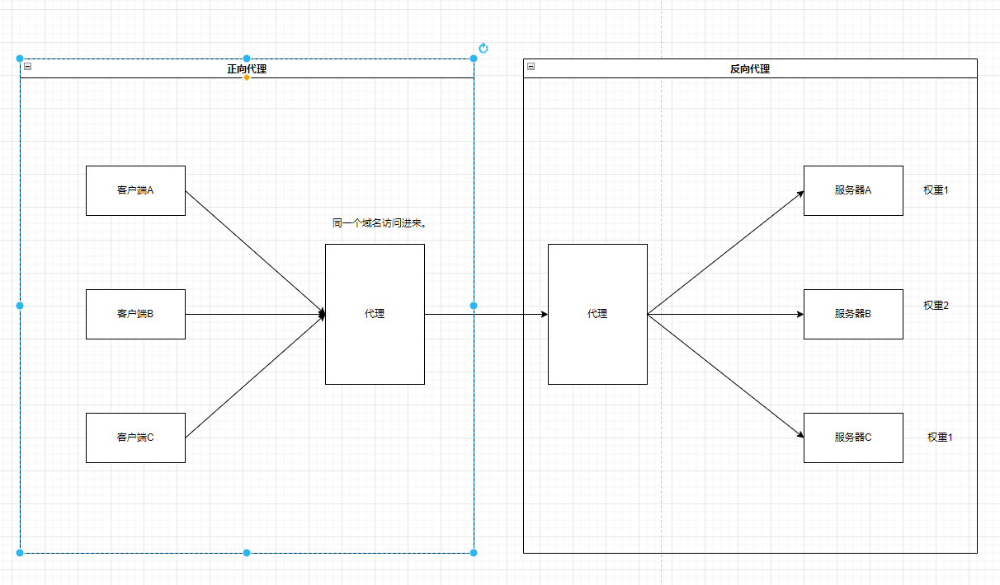
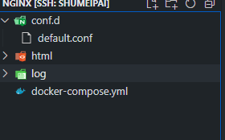

nginx
目录
简介
nginx [engine x] 是一个 HTTP 和反向代理服务器， 邮件代理服务器， 和一个通用的 TCP/UDP 代理服务器， 最初由伊戈尔·西索耶夫撰写。
- 基本的 HTTP 服务器功能
- 其他http服务器功能
- 邮件代理服务器功能
- TCP/UDP代理服务器功能
- 体系结构和可伸缩性
核心文件路径
# 配置文件存放目录
/etc/nginx
# 主配置文件
/etc/nginx/conf.d
# 程序默认存放位置
/usr/share/nginx/html
# 日志默认位置
/var/log/nginx
关键字
正向代理， 反向代理，
负载均衡： 轮询，加权轮重，ip hash
动静分离

安装
nginx: download https://nginx.org/en/download.html
windows
liunx
docker

# ./conf.d 文件夹下创建default.conf
server {
listen 80;
listen [::]:80;
server_name localhost;
location / {
root /usr/share/nginx/html;
index index.html index.htm;
}
error_page 500 502 503 504 /50x.html;
location = /50x.html {
root /usr/share/nginx/html;
}
}
version: '3'
services:
myNginx:
image: nginx:latest
volumes:
- ./conf.d:/etc/nginx/conf.d
- ./html:/usr/share/nginx/html
- ./log:/var/log/nginx
container_name: myNginx
ports:
- 80:80
restart: always
命令
nginx 启动
nginx -s stop 快速关闭Nginx，可能不保存相关信息，并迅速终止web服务。
nginx -s quit 平稳关闭Nginx，保存相关信息，有安排的结束web服务。
nginx -s reload 因改变了Nginx相关配置，需要重新加载配置而重载。
nginx -s reopen 重新打开日志文件。
nginx -c filename 为 Nginx 指定一个配置文件，来代替缺省的。
nginx -t 不运行，仅仅测试配置文件。nginx 将检查配置文件的语法的正确性，并尝试打开配置文件中所引用到的文件。
nginx -v 显示 nginx 的版本。
nginx -V 显示 nginx 的版本，编译器版本和配置参数。
配置文件结构
全局配置
events {
worker_connections 1024;
}
http {
http 配置
upstream xx{
server ip weight=1(权重);
//负载均衡 ： 服务器资源
}
server {
listen 8080;
server_name localhost;
//代理
location / {
root html;
index index.html index.htm;
proxy_pass 协议+xx;
}
}
server {
listen 8080;
server_name localhost;
//代理
location / {
root html;
index index.html index.htm;
proxy_pass 协议+xx;
}
}
}
示例
#运行用户
#user nobody;
#启动进程,通常设置成和cpu的数量相等
worker_processes 1;
#启动进程,通常设置成和cpu的数量相等
#error_log logs/error.log;
#error_log logs/error.log notice;
#error_log logs/error.log info;
#PID文件，记录当前启动的nginx的进程ID
#pid logs/nginx.pid;
#工作模式及连接数上限
events {
worker_connections 1024;#单个后台worker process进程的最大并发链接数
}
#设定http服务器，利用它的反向代理功能提供负载均衡支持
http {
#设定mime类型(邮件支持类型),类型由mime.types文件定义
include mime.types;
default_type application/octet-stream;
#设定日志
#log_format main '$remote_addr - $remote_user [$time_local] "$request" '
# '$status $body_bytes_sent "$http_referer" '
# '"$http_user_agent" "$http_x_forwarded_for"';
#access_log logs/access.log main;
#sendfile 指令指定 nginx 是否调用 sendfile 函数（zero copy 方式）来输出文件，对于普通应用，
#必须设为 on,如果用来进行下载等应用磁盘IO重负载应用，可设置为 off，以平衡磁盘与网络I/O处理速度，降低系统的uptime.
sendfile on;
#tcp_nopush on;
#连接超时时间
#keepalive_timeout 0;
keepalive_timeout 65;
#gzip压缩开关
#gzip on;
#设定实际的服务器列表
upstream test{
#weigth参数表示权值，权值越高被分配到的几率越大
server 127.0.0.1:8080 weight=1;
server 127.0.0.1:8081 weight=1;
}
#HTTP服务器
server {
#监听80端口，80端口是知名端口号，用于HTTP协议
listen 80;
#定义使用www.xx.com访问
server_name localhost;
#charset koi8-r;
#access_log logs/host.access.log main;
location / {
#指向webapp的目录
#root的处理结果是：root路径＋location路径
#alias的处理结果是：使用alias路径替换location路径
root html;
alias html;
#首页
index index.html index.htm;
#反向代理的路径（和upstream绑定），location 后面设置映射的路径
proxy_pass http://test;
}
#error_page 404 /404.html;
# redirect server error pages to the static page /50x.html
#
error_page 500 502 503 504 /50x.html;
location = /50x.html {
root html;
}
# proxy the PHP scripts to Apache listening on 127.0.0.1:80
#
#location ~ \.php$ {
# proxy_pass http://127.0.0.1;
#}
# pass the PHP scripts to FastCGI server listening on 127.0.0.1:9000
#
#location ~ \.php$ {
# root html;
# fastcgi_pass 127.0.0.1:9000;
# fastcgi_index index.php;
# fastcgi_param SCRIPT_FILENAME /scripts$fastcgi_script_name;
# include fastcgi_params;
#}
#禁止访问 .htxxx 文件
# deny access to .htaccess files, if Apache's document root
# concurs with nginx's one
#
#location ~ /\.ht {
# deny all;
#}
}
# another virtual host using mix of IP-, name-, and port-based configuration
#
#server {
# listen 8000;
# listen somename:8080;
# server_name somename alias another.alias;
# location / {
# root html;
# index index.html index.htm;
# }
#}
# HTTPS server
#
#server {
# listen 443 ssl;
# server_name localhost;
# ssl_certificate cert.pem;
# ssl_certificate_key cert.key;
# ssl_session_cache shared:SSL:1m;
# ssl_session_timeout 5m;
# ssl_ciphers HIGH:!aNULL:!MD5;
# ssl_prefer_server_ciphers on;
# location / {
# root html;
# index index.html index.htm;
# }
#}
}
负载均衡策略
- 轮询
- 加权轮询
- 最少链接
- 加权最少链接
- ip hash
- 普通hash
轮询
upstream bck_testing_01 {
# 默认所有服务器权重为 1
server 192.168.250.220:8080
server 192.168.250.221:8080
server 192.168.250.222:8080
}
加权轮询
upstream bck_testing_01 {
server 192.168.250.220:8080 weight=3
server 192.168.250.221:8080 # default weight=1
server 192.168.250.222:8080 # default weight=1
}
最少链接
分配给最少链接的服务器
upstream bck_testing_01 {
least_conn;
# with default weight for all (weight=1)
server 192.168.250.220:8080
server 192.168.250.221:8080
server 192.168.250.222:8080
}
加权最少链接
upstream bck_testing_01 {
least_conn;
server 192.168.250.220:8080 weight=3
server 192.168.250.221:8080 # default weight=1
server 192.168.250.222:8080 # default weight=1
}
ip_hash
upstream bck_testing_01 {
ip_hash;
# with default weight for all (weight=1)
server 192.168.250.220:8080
server 192.168.250.221:8080
server 192.168.250.222:8080
}
普通hash
upstream bck_testing_01 {
hash $request_uri;
# with default weight for all (weight=1)
server 192.168.250.220:8080
server 192.168.250.221:8080
server 192.168.250.222:8080
}
应用
- 多个webapp配置
- 静态站点
- 文件服务器
静态站点
html 文件和一堆静态资源
server {
listen 8090;
server_name localhost;
location / {
root C:/Users/24514/Desktop/nginx/html;
index home.html home.htm;
}
error_page 500 502 503 504 /50x.html;
location = /50x.html {
root html;
}
}
文件服务器
Nginx 中的配置要点：
- 将 autoindex 开启可以显示目录，默认不开启。
- 将 autoindex_exact_size 开启可以显示文件的大小。
- 将 autoindex_localtime 开启可以显示文件的修改时间。
- root 用来设置开放为文件服务的根路径。
- charset 设置为
charset utf-8,gbk;，可以避免中文乱码问题（windows 服务器下设置后，依然乱码，本人暂时没有找到解决方法）。
autoindex on;# 显示目录
autoindex_exact_size on;# 显示文件大小
autoindex_localtime on;# 显示文件时间
server {
charset utf-8,gbk; # windows 服务器下设置后，依然乱码，暂时无解
listen 9050 default_server;
listen [::]:9050 default_server;
server_name _;
root /share/fs;
}